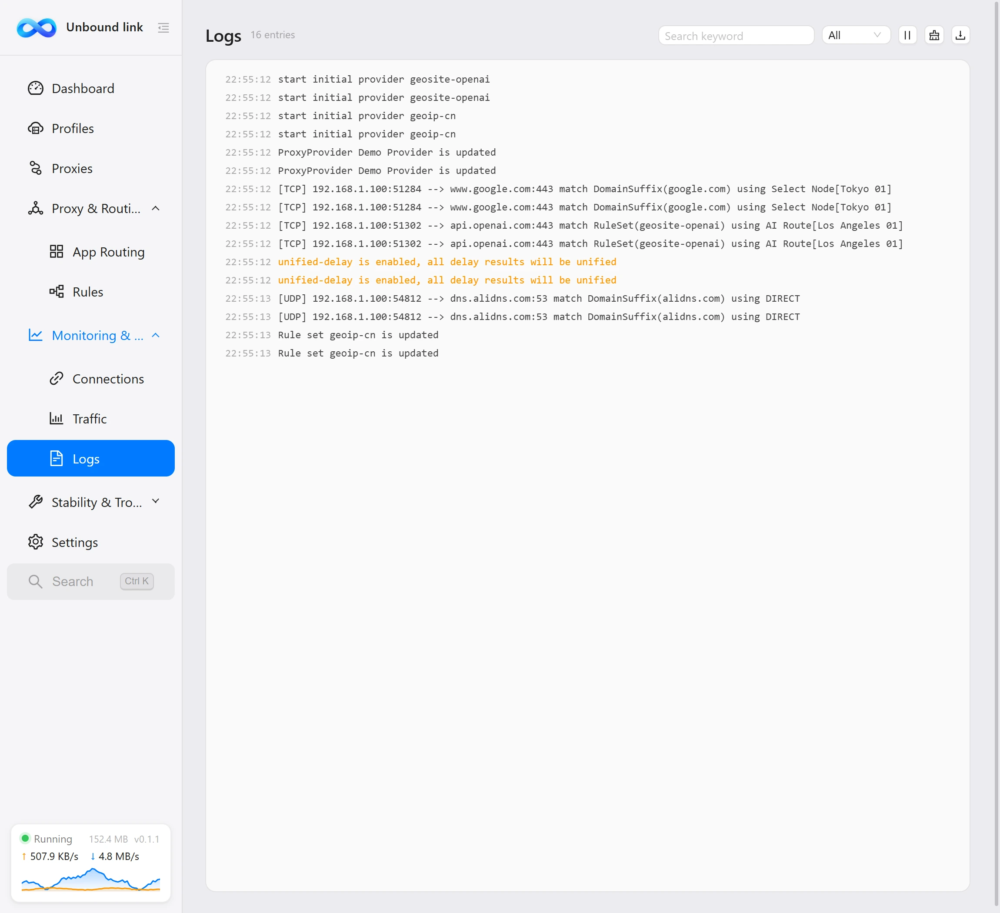
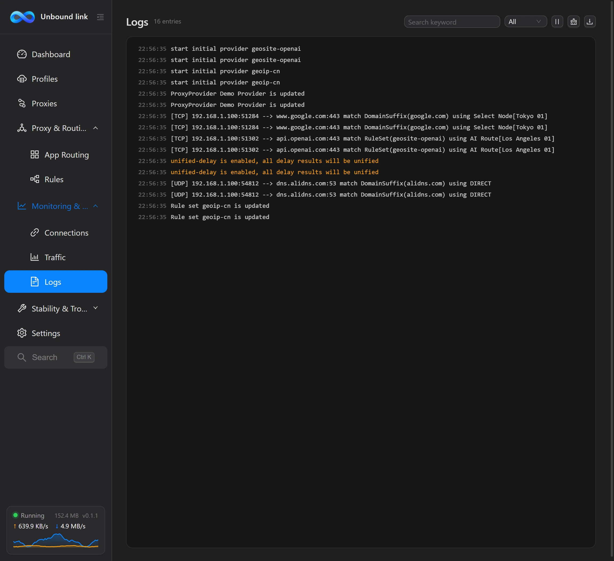

Logs
Logs record all output from the client and the core — the most direct evidence when troubleshooting.


What this page solves
Failed subscription updates, config reload errors, a core that won't start — they all leave records here. When trouble hits, don't rush to change settings; come here first to see who reported the error and at which step.
Two log sources
The view mixes two kinds of logs, both pushed in real time by the core and the client, arranged in time order:
| Source | Contents | Identified by |
|---|---|---|
| Core logs | Output from the mihomo core itself — connections, DNS, rule matching and so on. | Pushed from the core over WebSocket. |
| App logs | The client's own actions — subscription updates, config reloads, core start/stop. | Lines start with a [Unbound link] prefix. |
Lines with a [Unbound link] prefix are printed by the client; those without come from the core.
Filter by level
Level filters sit at the top: Debug / Info / Warning / Error, matching the core log levels debug / info / warning / error. To focus, tick only the levels you care about — everything else is filtered out.
| Level | Notes |
|---|---|
| Debug | The most detailed output; use it when troubleshooting. |
| Info | Routine operation records. |
| Warning | Notices that don't break anything but deserve attention. |
| Error | Lines that truly failed — handle these first. |
Adjusting the log level
Filtering only changes what's shown, not what's recorded. For more detailed logs, adjust Settings → Network → Log level; options are Debug / Info / Warning / Error / Silent.
Switch the level to Debug first, then reproduce the problem, so the full sequence around the failure gets recorded; once found, set it back to Info to keep logs from bloating.
Suggested troubleshooting order
With lots of logs, reading in this order is most efficient:
- First find error lines with the
[Unbound link]prefix — they point straight at the client step that failed. - Then the core's error lines — the concrete failures at the address, rule or connection level.
- Finally warning lines — to check for overlooked risks.
For symptom-by-symptom fixes see Troubleshooting; if you suspect a network-layer problem, use Diagnostics alongside it.
Logs persisted to files
Besides the on-screen view, logs are written in real time to logs\app.log in the data directory for complete records. Files rotate by size: when full, they're archived as app.1.log, app.2.log and so on; archives older than the retention window are cleaned up automatically.
Which levels are recorded, file size, file count and retention days are all set under Settings → Maintenance → App logs; "Open log folder" takes you straight there. Note this is separate from Settings → Network → Log level (which controls core logs).